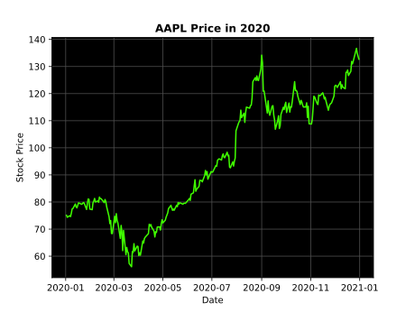
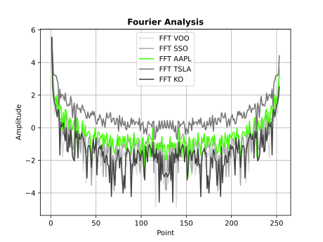

A Detailed Investigation into the Use of the Fourier Transform to Measure Volatility on the US Stock Market
The first step in understanding frequency analysis of stocks is understanding how one arrives at the frequency domain data. To do this, one must examine how the Fourier transform works and behaves.
With a fundamental understanding of the Fourier Transform, one can start to see applications in the financial sector. With today's capitalization on volatility, it becomes crucial to quantify this aspect of securities.
A few example securities are examined to give real applications of this process. By contrasting them, patterns can be seen to show how volatility can be measured via the Fourier.

